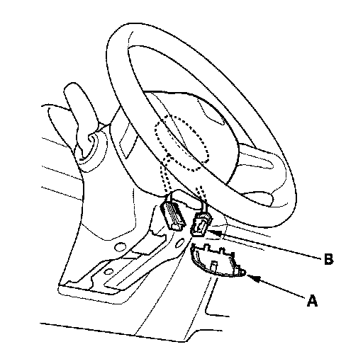
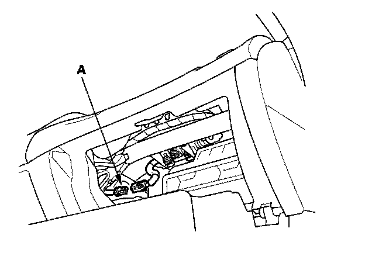
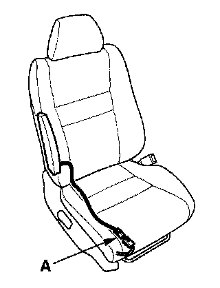
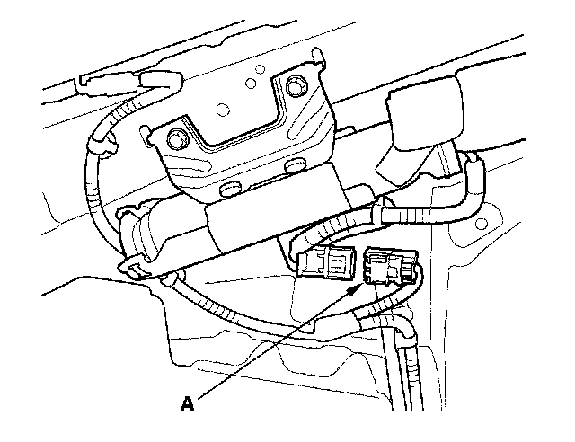
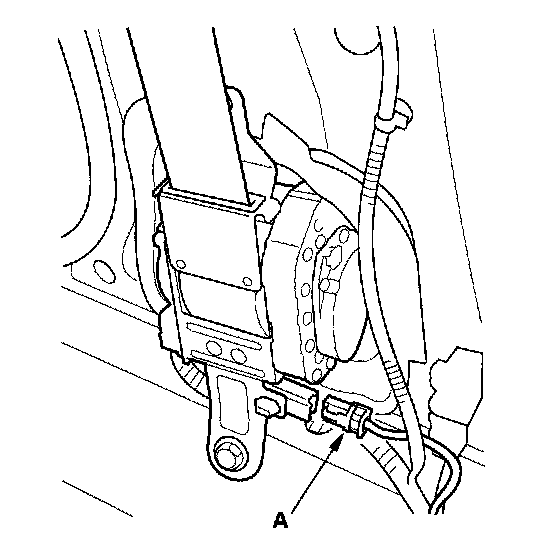
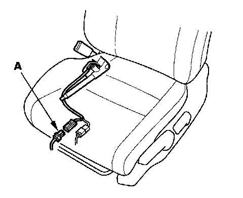
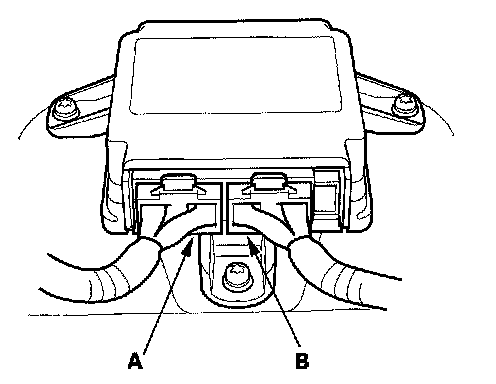

Connector Disconnection / Connection
Disconnecting System Connectors
Turn the ignition switch OFF disconnect the negative cable from the battery, and wait at least 3 minutes before beginning the following procedures.
- Before disconnecting the cable reel 4P connector (1), disconnect the driver's airbag 4P connector (2).
- Before disconnecting SRS unit connector B from SRS unit, disconnect both seat belt tensioner 4P connectors and both seat belt buckle tensioner 4P connectors (3, 4, 5, 6).
1. Disconnect the negative cable from the battery, and wait at least 3 minutes.

Driver's Airbag
2. Remove the access panel (A) from the steering wheel, then disconnect the driver's airbag 4P connector (B) from the cable reel.

Front Passenger's Airbag
3. Remove the lower glove box., then disconnect the front passenger's airbag 4P connector (A) from the dashboard wire harness.

Side Airbag
4. Disconnect the side airbag 2P connector (A) from the floor wire harness.
Side Curtain Airbag
5. Remove the headliner.

6. Disconnect the both floor wire harness 2P connector (A) from the side curtain airbag.

Seat Belt Tensioner
7. Remove the seat belt lower anchor. Disconnect both floor wire harness 4P connectors (A) from the seat belt tensioners.

Seat Belt Buckle Tensioner
8. Disconnect both floor wire harness 4P connectors (A) from the seat belt buckle tensioner.

SRS Unit
9. Disconnect both seat belt tensioner connectors and both seat belt buckle tensioner connectors. Remove the center console. Disconnect SRS unit connector A and SRS unit connector B from the SRS unit.